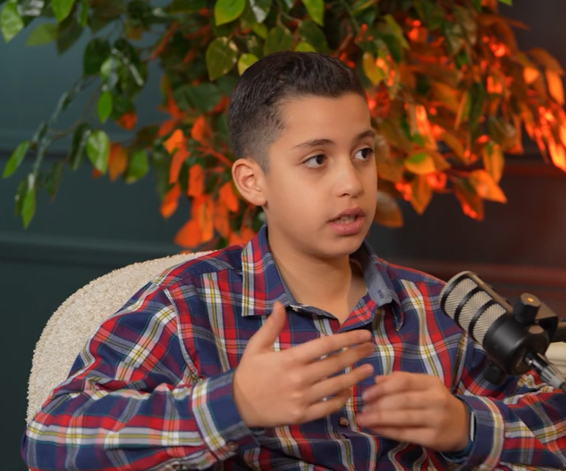

We are architecting the next paradigm of cognitive models. Fusing Mamba-style state spaces with continuous diffusion to unlock unbounded reasoning and ultra-fast inference.
Quadratic scaling in attention mechanisms limits context windows and slows inference. DimbaLabs is fundamentally challenging this architecture by building models that maintain constant-time state updates without sacrificing generating quality.
Replacing traditional attention with selective state space models (SSMs) like Mamba. This yields linear-time scaling, allowing for virtually infinite context capabilities with aggressive memory efficiency.
Applying diffusion paradigms typically used in imaging directly to latent textual states. This continuous refinement enables advanced, iterative reasoning steps prior to token generation.
By eliminating the KV-cache bottleneck, inference logic collapses into a fixed memory footprint. Generation speeds achieve an order of magnitude increase, enabling real-time complex reasoning.
Traditional LLMs predict the next token greedily. Dimba operates in a continuous latent space—refining thoughts before projecting them into discrete text space.
// Note: This is a visual simulation representing the generation process
A 13-year-old independent researcher, founder of Ghost blockchain, and lead architect of the Dimba diffusion-based language model.
Driven by the mathematical elegance of machine learning architecture and systems design. Frustrated by the inefficiencies of standard transformers, Faris set out to construct a novel architecture combining SSMs and continuous diffusion.
Operating out of Dubai. Focused on uncompromised technical depth, open research, and pushing inference theoretical limits.

We are actively seeking researchers, engineers, and partners to scale the Dimba architecture.
Initiate Contact